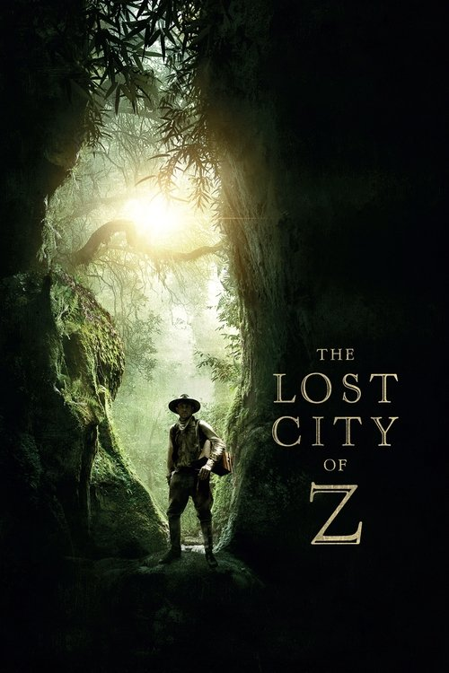

The Lost City of Z (2017)
الوصف: A true-life drama in the 1920s, centering on British explorer Col. Percy Fawcett, who discovered evidence of a previously unknown, advanced civilization in the Amazon and disappeared whilst searching for it.
الممثلون
- Charlie Hunnam (Percival Fawcett)
- Robert Pattinson (Henry Costin)
- Sienna Miller (Nina Fawcett)
- Tom Holland (Jack Fawcett)
- Angus Macfadyen (James Murray)
- Edward Ashley (Arthur Manley)
- Clive Francis (Sir John Scott Keltie)
- Ian McDiarmid (Sir George Goldie)
- Franco Nero (Baron de Gondoriz)
- Matthew Sunderland (Dan)
المخرج: James Gray
المنتج: Anthony Katagas